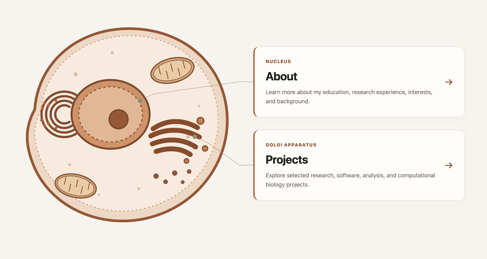

Website Portfolio
This website was the first project of 15-113! Made with assistance from AI.
Click on my projects to view them in more detail!

This website was the first project of 15-113! Made with assistance from AI.
[Short 1–2 sentence summary of the project.]
[Short 1–2 sentence summary of the project.]